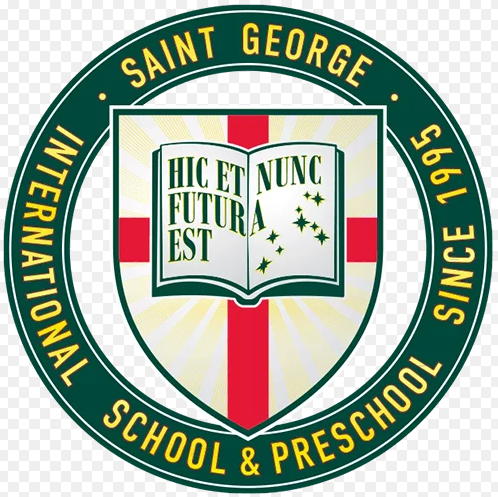

На 22г. съм, от Торонто, Канада и съм студент в НБУ - специалност "Реклама".
МЕЧТИ
За какво си мечтая?
Да обиколя света, като държавата, която най-много искам да посетя е Япония.
Да съм заобиколен от хора, които ме мотивират да развивам себе си.
Да реализирам своя собствена рекламна агенция с малък екип от талантливи и забавни хора!
ИНТЕРЕСИ
Какви са ми интересите?
Честно казано най-много удоволствие ми доставя пътуването, но по-точно проучването на нови дестинации, евтини полети, забележителности и организирането на екскурзии или почивки!
Още нещо, което ме влече са езиците
В момента съм в процес на изучаване на няколко нови езика, защото смятам, че е важно да се разбираш с хората от различни култури и да се учиш от тях.
ОБРАЗОВАНИЕ

St. George School
2006 - 2014
Периодът в Св. Георги обхваща от подготвителната година до края на 7ми клас. Включва интензивно изучаване на чужди езици: английски и испански
Doris Tenedi High School
2014 - 2019
Периодът в Дорис Тенеди обхваща от 8ми до 12ти клас включително. Включва: интензивно изучаване на чужди езици - английски и испански, множество групови проекти и допълнителни занятия.
New Bulgarian University
2019 - 2023
Основна специалност - БП "Реклама", майнър програма - "Управление на бизнеса и предприемачество ДО". Умения придобити: работа в екип, лидерски умения, презентиране пред публика, търсене на информация на високо ниво, анализиране на бизнеси и организационните им култури.
Software University
2022 - 2023
Изучаване на софтуерно инженерство - пътека "JavaScript FullStack Developer". Умения придобити: работа с множество програми, търсене на информация/проучване с цел придобиване на повече знания, работа в екип и изготвяне на проект, както и презентиране пред жури.
ОПИТ
Фрийланс + Собствена рекламна агенция
2015 - 2020 + 2020-СЕГА
Това е една дълга история, която започна просто като хоби, превърна се във фрийланс работа, а накрая и във фирма. Изпълнявам основните задължения сам, като останалата част аутсорсвам на трети лица.
ФинТех стартъп
2022-2023
Основната ми роля беше да разпределям задачи на екипа, да следя крайни срокове, да проучвам пазара и също така да търся други фирми за партньорство в бранша. Най-големият плюс от тук бяха новите връзки, които успях да създам, които със сигурност ще помогнат за в бъдеще.
Бест Брендс ЕООД - Джуниър Акаунт Мениджър
2022 - Стаж
Поддръжка на взаимоотношения с вече съществуващи клиенти, провеждане на пазарни проучвания и документация на процесите.
Каммекс - застрахователна фирма
2022-2023
Проучване на конкуренция,набиране на повече клиенти, консултации, създаване на изцяло нов ценоразпис и атрактивни оферти, с цел привличане на нови клиенти за бизнеса.